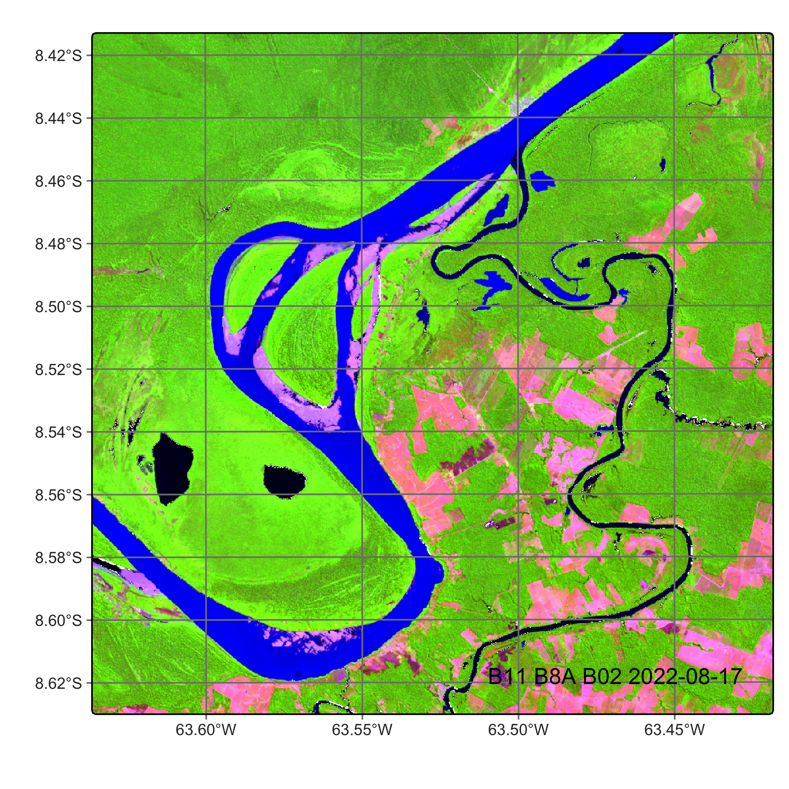
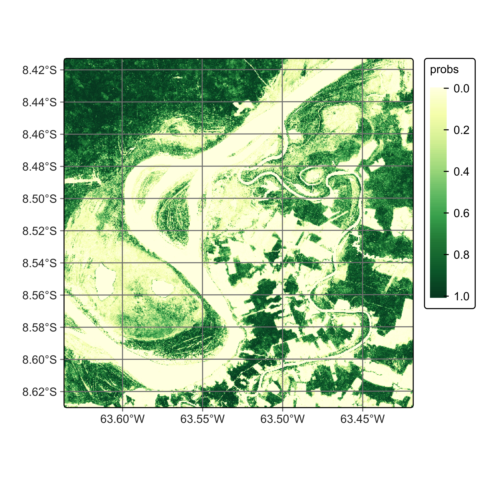
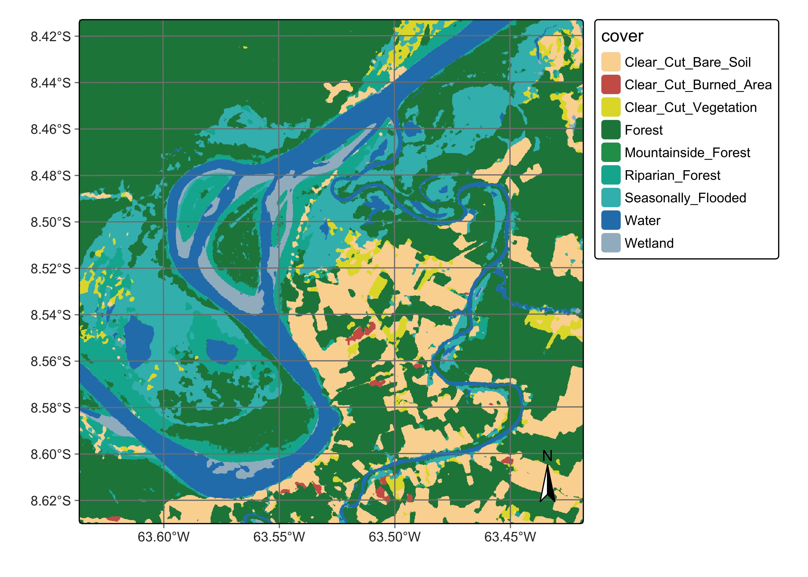
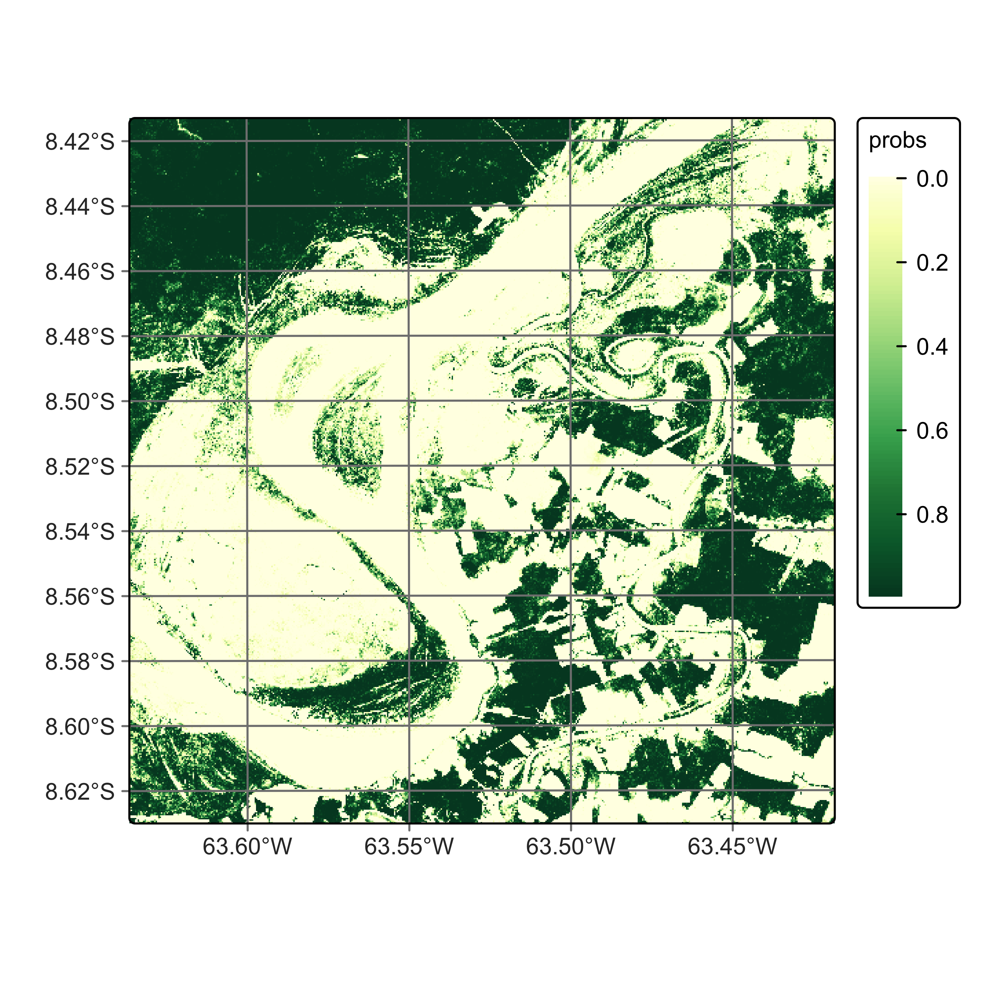
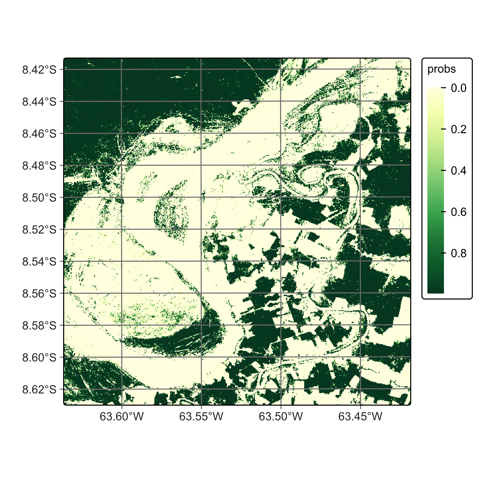
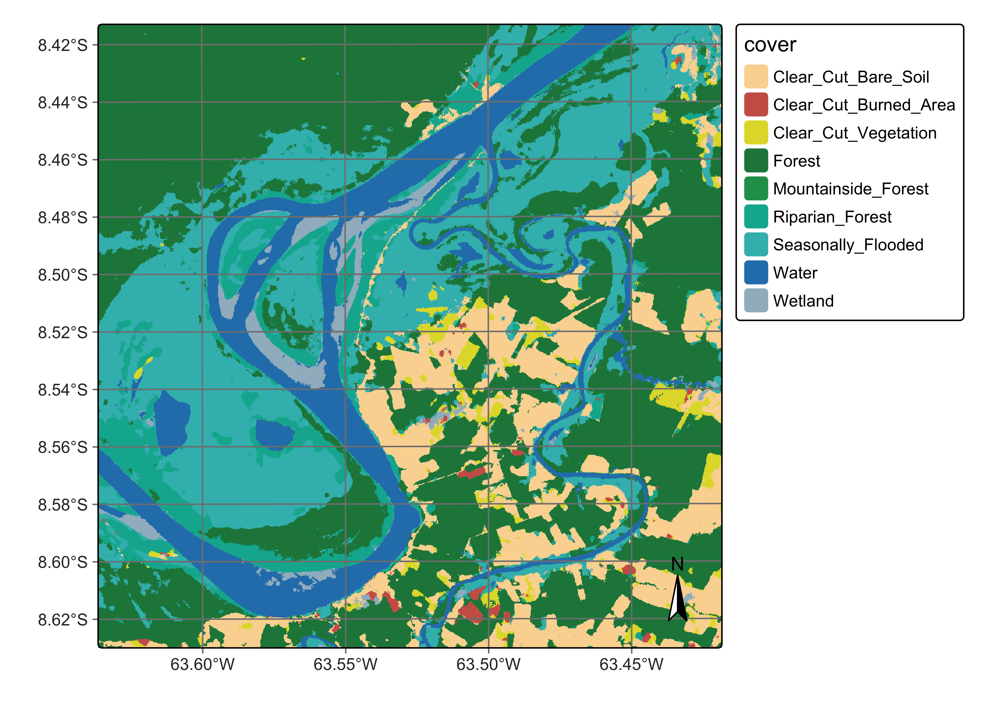
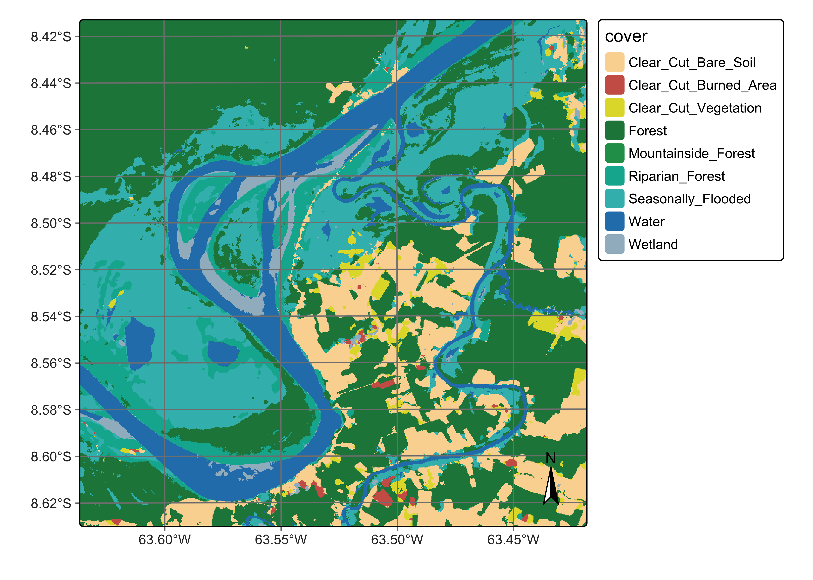

22 Ensemble prediction with multiple models

Configurations to run this chapter
# load "pysits" library
from pysits import *
from pathlib import Path
# set tempdir if it does not exist
tempdir_py = Path.home() / "sitsbook/tempdir/Python/cl_ensembleprediction"
tempdir_py.mkdir(parents=True, exist_ok=True)22.1 Introduction to ensemble prediction
Ensemble prediction is a powerful technique for combining predictions from multiple models to produce more accurate and robust predictions. Errors of individual models cancel out or are reduced when combined with the predictions of other models. As a result, ensemble predictions can lead to better overall accuracy and reduce the risk of overfitting. This can be especially useful when working with complex or uncertain data. By combining the predictions of multiple models, users can identify which features or factors are most important for making accurate predictions. When using ensemble methods, choosing diverse models with different sources of error is essential to ensure that the ensemble predictions are more precise and robust.
The sits package provides sits_combine_predictions() to estimate ensemble predictions using probability cubes produced by sits_classify() and optionally post-processed with sits_smooth(). There are two ways to make ensemble predictions from multiple models:
Averaging: In this approach, the predictions of each model are averaged to produce the final prediction. This method works well when the models have similar accuracy and errors.
Uncertainty: Predictions from different models are compared in terms of their uncertainties on a pixel-by-pixel basis; predictions with lower uncertainty are chosen as being more likely to be valid.
In what follows, we will use the same sample dataset and data cube used in Chapter Image classification in data cubes to illustrate how to produce an ensemble prediction. The dataset samples_deforestation_rondonia consists of 6,007 samples collected from Sentinel-2 images covering the state of Rondonia. Each time series contains values from all Sentinel-2/2A spectral bands for the year 2022 in 16-day intervals. The data cube is a subset of the Sentinel-2 tile “20LMR” which contains all spectral bands, plus spectral indices “NDVI”, “EVI” and “NBR” for the year 2022.
To begin with, we retrieve the training data from Hugging Face.
# get the samples for deforestation in Rondonia from Hugging Face
samples_deforestation_rondonia <- sits_from_hf(
repo = "e-sensing/samples_book",
file = "samples_deforestation_rondonia.parquet",
type = "dataset"
)# load data
samples_deforestation_rondonia = sits_from_hf(
repo = "e-sensing/samples_book",
file = "samples_deforestation_rondonia.parquet",
type = "dataset"
)22.2 Recovering the data cube
The first step is to recover the data cube which is available in the sitsdata package, and to select only the spectral bands.
# Files are available in a local directory
data_dir <- system.file("extdata/Rondonia-20LMR/", package = "sitsdata")
# Read data cube
ro_cube_20LMR <- sits_cube(
source = "MPC",
collection = "SENTINEL-2-L2A",
data_dir = data_dir
)
# reduce the number of bands
ro_cube_20LMR <- sits_select(
data = ro_cube_20LMR,
bands = c(
"B02", "B03", "B04", "B05",
"B06", "B07", "B08", "B11",
"B12", "B8A"
)
)
# plot one time step of the cube
plot(
ro_cube_20LMR,
blue = "B02",
green = "B8A",
red = "B11",
date = "2022-08-17"
)
# Files are available in a local directory
data_dir = r_package_dir("extdata/Rondonia-20LMR/", package = "sitsdata")
# Read data cube
ro_cube_20LMR = sits_cube(
source = "MPC",
collection = "SENTINEL-2-L2A",
data_dir = data_dir
)
# reduce the number of bands
ro_cube_20LMR = sits_select(
data = ro_cube_20LMR,
bands = (
"B02", "B03", "B04", "B05",
"B06", "B07", "B08", "B11",
"B12", "B8A"
)
)
# plot one time step of the cube
plot(
ro_cube_20LMR,
blue = "B02",
green = "B8A",
red = "B11",
date = "2022-08-17"
)
22.3 Classification using Random Forest
We will train three models: Random Forest (RF), Lightweight Temporal Attention Encoder (LTAE), and Temporal Convolution Neural Networks (TempCNN), classify the cube with them, and then combine their results. The example uses all spectral bands. We first run the RF classification.
# train a Random Forest model
rfor_model <- sits_train(samples_deforestation_rondonia, sits_rfor())
# classify the data cube
ro_cube_20LMR_rfor_probs <- sits_classify(
ro_cube_20LMR,
rfor_model,
output_dir = tempdir_r,
multicores = 6,
memsize = 24,
version = "rfor"
)
# plot the probabilities for class Forest
plot(ro_cube_20LMR_rfor_probs, labels = "Forest")
# train a Random Forest model
rfor_model = sits_train(samples_deforestation_rondonia, sits_rfor())
# classify the data cube
ro_cube_20LMR_rfor_probs = sits_classify(
ro_cube_20LMR,
rfor_model,
output_dir = tempdir_py,
multicores = 6,
memsize = 24,
version = "rfor"
)
# plot the probabilities for class Forest
plot(ro_cube_20LMR_rfor_probs, labels = "Forest")
ro_cube_20LMR_rfor_variance <- sits_variance(
ro_cube_20LMR_rfor_probs,
window_size = 9,
output_dir = tempdir_r,
multicores = 6,
memsize = 24,
version = "rfor"
)
summary(ro_cube_20LMR_rfor_variance) Clear_Cut_Bare_Soil Clear_Cut_Burned_Area Clear_Cut_Vegetation Forest
75% 4.04 5.08 0.33 0.7000
80% 4.83 5.45 0.40 0.9500
85% 5.43 5.72 0.51 1.4400
90% 5.81 6.05 0.80 2.6400
95% 6.46 6.78 4.04 5.7705
100% 17.88 13.02 13.80 25.2600
Mountainside_Forest Riparian_Forest Seasonally_Flooded Water Wetland
75% 4.3600 0.5600 0.31 0.030 4.94
80% 5.0900 0.7000 0.39 0.392 5.35
85% 5.5215 1.0100 0.50 0.700 5.68
90% 5.8500 1.9600 0.74 1.861 5.99
95% 6.2800 4.7105 1.39 6.160 6.51
100% 10.8300 42.0700 17.98 53.180 24.33ro_cube_20LMR_rfor_variance = sits_variance(
ro_cube_20LMR_rfor_probs,
window_size = 9,
output_dir = tempdir_py,
multicores = 6,
memsize = 24,
version = "rfor"
)
summary(ro_cube_20LMR_rfor_variance) Clear_Cut_Bare_Soil Clear_Cut_Burned_Area Clear_Cut_Vegetation Forest
75% 4.1800 5.090 0.33 0.7400
80% 4.9100 5.440 0.39 1.0300
85% 5.4600 5.720 0.51 1.5100
90% 5.8100 6.061 0.83 3.0600
95% 6.4005 6.770 3.93 5.9915
100% 17.4300 16.680 14.20 24.7400
Mountainside_Forest Riparian_Forest Seasonally_Flooded Water Wetland
75% 4.50 0.57 0.3200 0.02 4.93
80% 5.12 0.73 0.3900 0.34 5.34
85% 5.56 1.03 0.5115 0.67 5.64
90% 5.89 2.08 0.7610 1.84 5.95
95% 6.34 4.98 1.4500 6.96 6.47
100% 11.44 45.92 17.4200 51.36 28.65Based on the variance values, we apply the smoothness hyperparameter according to the recommendations proposed before. We choose values of \(\sigma^2_{k}\) that reflect our prior expectation of the spatial patterns of each class. For classes Clear_Cut_Vegetation and Clear_Cut_Burned_Area, to produce denser spatial clusters and remove “salt-and-pepper” outliers, we take \(\sigma^2_{k}\) values in 95%-100% range. In the case of the most frequent classes Forest and Clear_Cut_Bare_Soil we want to preserve their original spatial shapes as much as possible; the same logic applies to less frequent classes Water and Wetland. For this reason, we set \(\sigma^2_{k}\) values in the 75%-80% range for these classes. The class spatial patterns correspond to our prior expectations.
# Smoothen the probability cube
ro_cube_20LMR_rfor_bayes <- sits_smooth(
ro_cube_20LMR_rfor_probs,
output_dir = tempdir_r,
smoothness = c(
"Clear_Cut_Bare_Soil" = 5.25,
"Clear_Cut_Burned_Area" = 15.0,
"Clear_Cut_Vegetation" = 12.0,
"Forest" = 1.8,
"Mountainside_Forest" = 6.5,
"Riparian_Forest" = 6.0,
"Seasonally_Flooded" = 3.5,
"Water" = 1.5,
"Wetland" = 5.5),
multicores = 6,
memsize = 24,
version = "rfor"
)
# Classify the cube
ro_cube_20LMR_rfor_class <- sits_label_classification(
ro_cube_20LMR_rfor_bayes,
output_dir = tempdir_r,
multicores = 6,
memsize = 24,
version = "rfor"
)
plot(ro_cube_20LMR_rfor_class,
legend_text_size = 0.7, legend_position = "outside")
ro_cube_20LMR_rfor_bayes = sits_smooth(
ro_cube_20LMR_rfor_probs,
output_dir = tempdir_py,
smoothness = dict(
Clear_Cut_Bare_Soil = 5.25,
Clear_Cut_Burned_Area = 15.0,
Clear_Cut_Vegetation = 12.0,
Forest = 1.8,
Mountainside_Forest = 6.5,
Riparian_Forest = 6.0,
Seasonally_Flooded = 3.5,
Water = 1.5,
Wetland = 5.5),
multicores = 6,
memsize = 24,
version = "rfor"
)
ro_cube_20LMR_rfor_class = sits_label_classification(
ro_cube_20LMR_rfor_bayes,
output_dir = tempdir_py,
multicores = 6,
memsize = 24,
version = "rfor"
)
plot(ro_cube_20LMR_rfor_class,
legend_text_size = 0.7, legend_position = "outside")
22.4 Classification using Temporal Convolution Neural Networks (TempCNN)
The next step is to classify the same area using a tempCNN algorithm, as shown below.
# train a tempcnn model
tcnn_model <- sits_train(samples_deforestation_rondonia,
sits_tempcnn())
# classify the data cube
ro_cube_20LMR_tcnn_probs <- sits_classify(
ro_cube_20LMR,
tcnn_model,
output_dir = tempdir_r,
multicores = 2,
memsize = 8,
gpu_memory = 8,
version = "tcnn"
)
# plot the probabilities for class Forest
plot(ro_cube_20LMR_tcnn_probs, labels = "Forest")
# train a tempcnn model
tcnn_model = sits_train(samples_deforestation_rondonia,
sits_tempcnn())
# classify the data cube
ro_cube_20LMR_tcnn_probs = sits_classify(
ro_cube_20LMR,
tcnn_model,
output_dir = tempdir_py,
multicores = 2,
memsize = 8,
gpu_memory = 8,
version = "tcnn"
)
# plot the probabilities for class Forest
plot(ro_cube_20LMR_tcnn_probs, labels = "Forest")
Now we calculate the variance of the probability cube.
ro_cube_20LMR_tcnn_variance <- sits_variance(
ro_cube_20LMR_tcnn_probs,
window_size = 9,
output_dir = tempdir_r,
multicores = 6,
memsize = 24,
version = "tcnn"
)
summary(ro_cube_20LMR_tcnn_variance) Clear_Cut_Bare_Soil Clear_Cut_Burned_Area Clear_Cut_Vegetation Forest
75% 1.010 1.05 1.5300 2.020
80% 1.290 1.30 1.8100 2.500
85% 1.820 1.67 2.2200 3.260
90% 2.911 2.28 2.9100 4.681
95% 6.171 3.61 4.3705 7.970
100% 28.580 20.24 30.8100 41.790
Mountainside_Forest Riparian_Forest Seasonally_Flooded Water Wetland
75% 1.16 2.220 2.140 0.640 1.55
80% 1.40 2.650 2.582 0.790 1.85
85% 1.70 3.320 3.240 1.020 2.29
90% 2.15 4.321 4.461 1.470 2.98
95% 2.86 6.550 7.180 8.431 4.35
100% 10.09 46.540 45.250 56.010 37.42ro_cube_20LMR_tcnn_variance = sits_variance(
ro_cube_20LMR_tcnn_probs,
window_size = 9,
output_dir = tempdir_py,
multicores = 6,
memsize = 24,
version = "tcnn"
)
summary(ro_cube_20LMR_tcnn_variance) Clear_Cut_Bare_Soil Clear_Cut_Burned_Area Clear_Cut_Vegetation Forest
75% 1.02 1.110 1.550 2.0200
80% 1.30 1.380 1.830 2.5200
85% 1.80 1.780 2.220 3.3100
90% 2.99 2.391 2.930 4.7310
95% 6.14 3.620 4.441 8.1315
100% 37.04 18.330 32.150 41.3800
Mountainside_Forest Riparian_Forest Seasonally_Flooded Water Wetland
75% 1.15 2.2000 2.070 0.6500 1.5525
80% 1.37 2.6400 2.520 0.8000 1.8900
85% 1.65 3.2700 3.210 1.0400 2.3500
90% 2.09 4.3610 4.541 1.5310 3.0500
95% 2.86 6.8505 7.720 9.7945 4.3600
100% 10.23 50.3900 43.470 50.7200 34.6100Based on the variance results, we perform a spatial smoothing and classify the data cube.
ro_cube_20LMR_tcnn_bayes <- sits_smooth(
ro_cube_20LMR_tcnn_probs,
output_dir = tempdir_r,
window_size = 11,
smoothness = c(
"Clear_Cut_Bare_Soil" = 1.5,
"Clear_Cut_Burned_Area" = 20.0,
"Clear_Cut_Vegetation" = 25.0,
"Forest" = 4.0,
"Mountainside_Forest" = 3.0,
"Riparian_Forest" = 40.0,
"Seasonally_Flooded" = 30.0,
"Water" = 1.0,
"Wetland" = 2.0),
multicores = 2,
memsize = 6,
version = "tcnn"
)
ro_cube_20LMR_tcnn_class <- sits_label_classification(
ro_cube_20LMR_tcnn_bayes,
output_dir = tempdir_r,
multicores = 2,
memsize = 6,
version = "tcnn"
)
plot(ro_cube_20LMR_tcnn_class,
legend_text_size = 0.7, legend_position = "outside")ro_cube_20LMR_tcnn_bayes = sits_smooth(
ro_cube_20LMR_tcnn_probs,
output_dir = tempdir_py,
window_size = 11,
smoothness = dict(
Clear_Cut_Bare_Soil = 1.5,
Clear_Cut_Burned_Area = 20.0,
Clear_Cut_Vegetation = 25.0,
Forest = 4.0,
Mountainside_Forest = 3.0,
Riparian_Forest = 40.0,
Seasonally_Flooded = 30.0,
Water = 1.0,
Wetland = 2.0),
multicores = 2,
memsize = 6,
version = "tcnn"
)
ro_cube_20LMR_tcnn_class = sits_label_classification(
ro_cube_20LMR_tcnn_bayes,
output_dir = tempdir_py,
multicores = 2,
memsize = 6,
version = "tcnn"
)
plot(ro_cube_20LMR_tcnn_class,
legend_text_size = 0.7, legend_position = "outside")
22.5 Classification using Lightweight Temporal Attention Encoder (LTAE)
The third model is the Lightweight Temporal Attention Encoder (LTAE), which has been discussed in the Machine Learning chapter.
# train a tempcnn model
ltae_model <- sits_train(samples_deforestation_rondonia, sits_lighttae())
# classify the data cube
ro_cube_20LMR_ltae_probs <- sits_classify(
ro_cube_20LMR,
ltae_model,
output_dir = tempdir_r,
multicores = 2,
memsize = 6,
gpu_memory = 2,
version = "ltae"
)
# plot the probabilities for class Forest
plot(ro_cube_20LMR_ltae_probs, labels = "Forest")
# train a tempcnn model
ltae_model = sits_train(samples_deforestation_rondonia, sits_lighttae())
# classify the data cube
ro_cube_20LMR_ltae_probs = sits_classify(
ro_cube_20LMR,
ltae_model,
output_dir = tempdir_py,
multicores = 2,
memsize = 8,
gpu_memory = 8,
version = "ltae"
)
# plot the probabilities for class Forest
plot(ro_cube_20LMR_ltae_probs, labels = "Forest")
We then compute the variance of the probability cube produced by the LTAE algorithm.
ro_cube_20LMR_ltae_variance <- sits_variance(
ro_cube_20LMR_ltae_probs,
window_size = 9,
output_dir = tempdir_r,
multicores = 6,
memsize = 24,
version = "ltae"
)
summary(ro_cube_20LMR_ltae_variance) Clear_Cut_Bare_Soil Clear_Cut_Burned_Area Clear_Cut_Vegetation Forest
75% 0.8300 0.7900 1.170 2.4700
80% 1.2800 1.0500 1.582 3.7120
85% 2.2700 1.4500 2.300 5.1115
90% 3.6400 2.1700 3.290 7.0600
95% 6.5905 3.3605 4.960 9.8400
100% 30.5000 20.1800 22.040 44.7100
Mountainside_Forest Riparian_Forest Seasonally_Flooded Water Wetland
75% 0.6400 2.77 3.690 0.4600 1.0700
80% 0.7900 3.41 4.594 0.5300 1.5300
85% 1.0600 4.20 5.690 0.6715 2.2800
90% 1.5810 5.53 7.331 1.0000 3.5010
95% 2.8005 7.90 10.460 10.0615 5.8115
100% 14.8500 36.89 39.240 43.1100 45.9900ro_cube_20LMR_ltae_variance = sits_variance(
ro_cube_20LMR_ltae_probs,
window_size = 9,
output_dir = tempdir_py,
multicores = 6,
memsize = 24,
version = "ltae"
)
summary(ro_cube_20LMR_ltae_variance) Clear_Cut_Bare_Soil Clear_Cut_Burned_Area Clear_Cut_Vegetation Forest
75% 0.820 0.7600 1.2100 2.4825
80% 1.292 1.0600 1.6500 3.6600
85% 2.220 1.4900 2.3315 5.0915
90% 3.630 2.2100 3.3110 6.9210
95% 6.521 3.4005 5.2205 10.1905
100% 27.600 15.5400 26.9300 42.7800
Mountainside_Forest Riparian_Forest Seasonally_Flooded Water Wetland
75% 0.62 2.77 3.7525 0.4500 1.0000
80% 0.76 3.36 4.5700 0.5400 1.4420
85% 1.00 4.21 5.5915 0.6800 2.1615
90% 1.46 5.41 7.1500 0.9800 3.2900
95% 2.50 7.81 10.3405 9.9305 5.5100
100% 16.03 36.73 38.6900 41.7800 45.8800We use the same rationale for selecting the smoothness parameter for the Bayesian smoothing operation as in the cases above.
ro_cube_20LMR_ltae_bayes <- sits_smooth(
ro_cube_20LMR_tcnn_probs,
output_dir = tempdir_r,
window_size = 11,
smoothness = c(
"Clear_Cut_Bare_Soil" = 1.2,
"Clear_Cut_Burned_Area" = 10.0,
"Clear_Cut_Vegetation" = 15.0,
"Forest" = 4.0,
"Mountainside_Forest" = 8.0,
"Riparian_Forest" = 25.0,
"Seasonally_Flooded" = 30.0,
"Water" = 0.3,
"Wetland" = 1.8),
multicores = 2,
memsize = 6,
version = "ltae"
)
# generate the classified map
ro_cube_20LMR_ltae_class <- sits_label_classification(
ro_cube_20LMR_ltae_bayes,
output_dir = tempdir_r,
multicores = 2,
memsize = 6,
version = "ltae"
)
# plot the classified map
plot(ro_cube_20LMR_ltae_class,
legend_text_size = 0.7, legend_position = "outside")
ro_cube_20LMR_ltae_bayes = sits_smooth(
ro_cube_20LMR_tcnn_probs,
output_dir = tempdir_py,
window_size = 11,
smoothness = dict(
Clear_Cut_Bare_Soil = 1.2,
Clear_Cut_Burned_Area = 10.0,
Clear_Cut_Vegetation = 15.0,
Forest = 4.0,
Mountainside_Forest = 8.0,
Riparian_Forest = 25.0,
Seasonally_Flooded = 30.0,
Water = 0.3,
Wetland = 1.8),
multicores = 2,
memsize = 6,
version = "ltae"
)
# generate the classified map
ro_cube_20LMR_ltae_class = sits_label_classification(
ro_cube_20LMR_ltae_bayes,
output_dir = tempdir_py,
multicores = 2,
memsize = 6,
version = "ltae"
)
# plot the classified map
plot(ro_cube_20LMR_ltae_class,
legend_text_size = 0.7, legend_position = "outside")
22.6 Differences between model results
To understand the differences between the results, it is useful to compare the resulting class areas produced by the different algorithms, expressed in hectares.
# get the summary of the map produced by RF
sum1 <- summary(ro_cube_20LMR_rfor_class) |>
dplyr::select("class", "area")
colnames(sum1) <- c("class", "rfor")
# get the summary of the map produced by TCNN
sum2 <- summary(ro_cube_20LMR_tcnn_class) |>
dplyr::select("class", "area")
colnames(sum2) <- c("class", "tcnn")
# get the summary of the map produced by LTAE
sum3 <- summary(ro_cube_20LMR_ltae_class) |>
dplyr::select("class", "area")
colnames(sum3) <- c("class", "ltae")
# compare class areas of maps produced by the three models
pred_class_areas <- dplyr::inner_join(sum1, sum2, by = "class") |>
dplyr::inner_join(sum3, by = "class")
pred_class_areas# A tibble: 9 × 4
class rfor tcnn ltae
<chr> <dbl> <dbl> <dbl>
1 Clear_Cut_Bare_Soil 8017. 6818. 6788.
2 Clear_Cut_Burned_Area 185. 280. 282.
3 Clear_Cut_Vegetation 1673. 1204. 1209.
4 Forest 27960. 23696. 23726.
5 Mountainside_Forest 0 0.6 0.12
6 Riparian_Forest 4545. 4055. 3993.
7 Seasonally_Flooded 7581. 13737. 13808.
8 Water 6330. 6624. 6583.
9 Wetland 1309. 1186. 1211. import pandas as pd
# Get classification summaries
sum1 = summary(ro_cube_20LMR_rfor_class)
sum2 = summary(ro_cube_20LMR_tcnn_class)
sum3 = summary(ro_cube_20LMR_ltae_class)
# Get only ``class`` and ``area`` columns
sum1 = sum1[["class", "area"]]
sum2 = sum2[["class", "area"]]
sum3 = sum3[["class", "area"]]
# Rename columns
sum1.columns = ["class", "rfor"]
sum2.columns = ["class", "tcnn"]
sum3.columns = ["class", "ltae"]
# Merge columns
pred_class_areas = pd.merge(sum1, sum2, on = "class", how = "inner")
pred_class_areas = pd.merge(pred_class_areas, sum3, on = "class", how = "inner")
pred_class_areas# A tibble: 9 × 4
class rfor tcnn ltae
<chr> <dbl> <dbl> <dbl>
1 Clear_Cut_Bare_Soil 8017. 6818. 6788.
2 Clear_Cut_Burned_Area 185. 280. 282.
3 Clear_Cut_Vegetation 1673. 1204. 1209.
4 Forest 27960. 23696. 23726.
5 Mountainside_Forest 0 0.6 0.12
6 Riparian_Forest 4545. 4055. 3993.
7 Seasonally_Flooded 7581. 13737. 13808.
8 Water 6330. 6624. 6583.
9 Wetland 1309. 1186. 1211. The study area presents many challenges for land classification, given the presence of wetlands, riparian forests and seasonally-flooded areas. The results show the algorithms obtain quite different results, since each model has different sensitivities. The RF method is biased towards the most frequent classes, especially for Clear_Cut_Bare_Soil and Forest. The area estimated by RF for class Clear_Cut_Burned_Area is the smallest of the three models. Most pixels assigned by LTAE and TCNN as burned areas are assigned by RF as being areas of bare soil. The RF algorithm tends to be more conservative. The reason is that RF decision-making uses values from single attributes (values of a single band in a given time instance), while LTAE and TCNN consider the relations between instances of the time series. Since the RF model is sensitive to the response of images at the end of the period, it tends to focus on values that indicate the presence of forests and bare soils during the dry season, which peaks in August. The LTAE and TCNN models are more balanced to the overall separation of classes in the entire attribute space, and produce larger estimates of riparian and seasonally flooded forest than the other methods. In contrast, both LTAE and TCNN make more mistakes than RF in including flooded areas in the center-left part of the image on the left side of the river as Clear_Cut_Vegetation when the right label would be riparian or flooded forests.
22.7 Combining the different predictions
Given the differences and complementarities between the three predicted outcomes, combining them using sits_combine_predictions() is useful. This function takes the following arguments:
| Parameter | Meaning |
|---|---|
cubes |
a list of the cubes to be combined. These cubes should be probability cubes which optionally may have been smoothed. |
type |
which indicates how to combine the probability maps. The options are average, which performs a weighted mean of the probabilities, and uncertainty, which uses the uncertainty cubes to combine the predictions -weights, a vector of weights to be used to combine the predictions when average is selected (default is equal weights). |
uncertainty_cubes |
a list of uncertainty cubes associated to the predictions (optional). |
multicores |
number of cores to be used. |
memsize |
RAM used in the classification. |
output_dir |
directory where the classified raster files will be written. |
# Combine the three predictions by taking the average of the probabilities for each class
ro_cube_20LMR_average_probs <- sits_combine_predictions(
cubes = list(ro_cube_20LMR_tcnn_bayes,
ro_cube_20LMR_rfor_bayes,
ro_cube_20LMR_ltae_bayes),
type = "average",
version = "average-rfor-tcnn-ltae",
output_dir = tempdir_r,
weights = c(0.33, 0.34, 0.33),
memsize = 16,
multicores = 4
)
# Label the average probability cube
ro_cube_20LMR_average_class <- sits_label_classification(
cube = ro_cube_20LMR_average_probs,
output_dir = tempdir_r,
version = "average-rfor-tcnn-ltae",
memsize = 16,
multicores = 4
)
# plot the classified map
plot(ro_cube_20LMR_average_class,
legend_text_size = 0.7, legend_position = "outside")
# Combine the three predictions by taking the average of the probabilities for each class
ro_cube_20LMR_average_probs = sits_combine_predictions(
cubes = [
ro_cube_20LMR_tcnn_bayes,
ro_cube_20LMR_rfor_bayes,
ro_cube_20LMR_ltae_bayes
],
type = "average",
version = "average-rfor-tcnn-ltae",
output_dir = tempdir_py,
weights = (0.33, 0.34, 0.33),
memsize = 16,
multicores = 4
)
# Label the average probability cube
ro_cube_20LMR_average_class = sits_label_classification(
cube = ro_cube_20LMR_average_probs,
output_dir = tempdir_py,
version = "average-rfor-tcnn-ltae",
memsize = 16,
multicores = 4
)
# plot the classified map
plot(ro_cube_20LMR_average_class,
legend_text_size = 0.7, legend_position = "outside")
We can also consider the class areas produced by the ensemble combination and compare them to the original estimates, expressed in hectares
# get the summary of the map produced by LTAE
sum4 <- summary(ro_cube_20LMR_average_class) |>
dplyr::select("class", "area")
colnames(sum4) <- c("class", "ave")
# compare class areas of non-smoothed and smoothed maps
pred_ave_rfor_tcnn_ltae <- dplyr::inner_join(sum1, sum2, by = "class") |>
dplyr::inner_join(sum3, by = "class") |>
dplyr::inner_join(sum4, by = "class")
pred_ave_rfor_tcnn_ltae# A tibble: 9 × 5
class rfor tcnn ltae ave
<chr> <dbl> <dbl> <dbl> <dbl>
1 Clear_Cut_Bare_Soil 8017. 6818. 6788. 7095.
2 Clear_Cut_Burned_Area 185. 280. 282. 256.
3 Clear_Cut_Vegetation 1673. 1204. 1209. 1134.
4 Forest 27960. 23696. 23726. 24481.
5 Mountainside_Forest 0 0.6 0.12 0.08
6 Riparian_Forest 4545. 4055. 3993. 4201.
7 Seasonally_Flooded 7581. 13737. 13808. 12702.
8 Water 6330. 6624. 6583. 6569.
9 Wetland 1309. 1186. 1211. 1162. # get the summary of the map produced by LTAE
sum4 = summary(ro_cube_20LMR_average_class)
sum4 = sum4[["class", "area"]]
# Rename columns
sum4.columns = ["class", "ave"]
# compare class areas of non-smoothed and smoothed maps
pred_ave_rfor_tcnn_ltae = pd.merge(sum1, sum2, on = "class", how = "inner")
pred_ave_rfor_tcnn_ltae = pd.merge(pred_ave_rfor_tcnn_ltae, sum3, on = "class", how = "inner")
pred_ave_rfor_tcnn_ltae = pd.merge(pred_ave_rfor_tcnn_ltae, sum4, on = "class", how = "inner")
pred_ave_rfor_tcnn_ltae# A tibble: 9 × 5
class rfor tcnn ltae ave
<chr> <dbl> <dbl> <dbl> <dbl>
1 Clear_Cut_Bare_Soil 8017. 6818. 6788. 7095.
2 Clear_Cut_Burned_Area 185. 280. 282. 256.
3 Clear_Cut_Vegetation 1673. 1204. 1209. 1134.
4 Forest 27960. 23696. 23726. 24481.
5 Mountainside_Forest 0 0.6 0.12 0.08
6 Riparian_Forest 4545. 4055. 3993. 4201.
7 Seasonally_Flooded 7581. 13737. 13808. 12702.
8 Water 6330. 6624. 6583. 6569.
9 Wetland 1309. 1186. 1211. 1162. As expected, the ensemble map combines information from the three models. Taking the RF model prediction as a base, there is a reduction in the areas of classes Clear_Cut_Bare_Soil and Forest, confirming the tendency of the RF model to overemphasize the most frequent classes. The LTAE and TempCNN models are more sensitive to class variations and capture time-varying classes such as Riparian_Forest and Clear_Cut_Burned_Area in more detail than the RF model. However, both TempCNN and LTAE tend to confuse the deforestation-related class Clear_Cut_Vegetation and the natural class Riparian_Forest more than the RF model. This effect is evident in the left bank of the Madeira River in the center-left region of the image. Also, both the LTAE and TempCNN maps are more grainy and have more spatial variability than the RF map.
The average map provides a compromise between RF’s strong emphasis on the most frequent classes and the tendency of deep learning methods to produce outliers based on temporal relationships. The average map is less grainy and more spatially consistent than the LTAE and TempCNN maps, while introducing variability which is not present in the RF map.
22.8 Summary
This chapter shows the possibilities of ensemble prediction. There are many ways to get better results than those presented here. Increasing the number of spectral bands would improve the final accuracy. Also, Bayesian smoothing for deep learning models should not rely on default parameters; rather it needs to rely on variance analysis, increase the spatial window and provide more informed hyperparameters. In general, ensemble prediction should be considered in all situations where one is not satisfied with the results of individual models. Combining model output increases the reliability of the result and thus should be considered in all situations where similar classes are present.